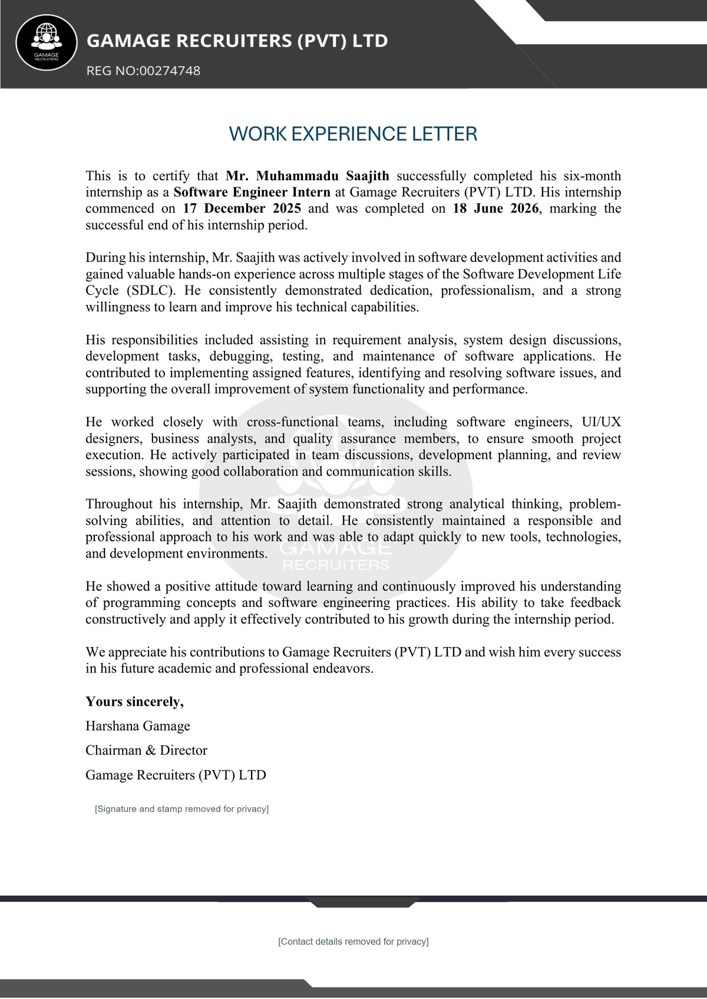

Web & full-stack
Connecting interfaces with application logic and real-time services.
IDEAS. CODE. REAL POSSIBILITIES.
Software Engineer.
Turning ideas into useful software.
Bringing full-stack development and applied AI together.
A LITTLE ABOUT ME
I’m Saajith, an entry-level Software Engineer based in Sri Lanka, with internship experience, independent development work, and a focus on practical AI applications.
I completed a six-month software engineering internship at Gamage Recruiters and develop software independently through CodeForge Technology. At SLIIT, I led the final-year AquaSense research team, working on AI-based swimming pool monitoring and maintenance.
I have completed my final semester at SLIIT and am awaiting results. I’m looking to bring my problem-solving skills and collaborative approach to a software engineering team.
MY TOOLKIT
Technologies and strengths reflected in my research and development work.
Connecting interfaces with application logic and real-time services.
Applying machine learning to monitoring and maintenance problems.
Coordinating research, integrating components, and documenting the work.
THE JOURNEY SO FAR
Professional experience, independent work, and collaborative research.
Completed six months of software engineering internship training, gaining experience in a professional development environment.
Internship documentationIndependent software development experience, taking ideas through implementation and building practical development skills.
Selected work will be added with shareable project details.
Led the AquaSense research team and worked on crowd-aware maintenance scheduling and integration of the shared monitoring platform.
Final semester completed · Results pendingSELECTED WORK
From research to real systems.
A closer look at what I’ve been building.
FEATURED · SLIIT FINAL-YEAR RESEARCH
AI-Based Smart Swimming Pool Monitoring and Maintenance System
An integrated research platform combining crowd-aware maintenance, water quality prediction, drowning detection, and garbage detection in one monitoring dashboard.
My contribution: Group leadership, crowd-aware maintenance scheduling, and integration of the shared backend, decision engine, and dashboard.
The showcase presents research and documentation; it is separate from the operating monitoring system.
Explore my GitHub for repositories and development activity. Additional case studies will be added as project details are ready to share.
EDUCATION & RESEARCH
Learning by exploring ideas, solving problems, and building together.
Sri Lanka Institute of Information Technology
Final semester completed; awaiting results.
AI-based swimming pool monitoring and maintenance.
CREDENTIALS & DOCUMENTS
Explore the privacy-safe internship letter. Other documents are clearly marked as pending.
Showing all 4 documents: 1 available copy and 3 placeholders.
Confirmation document placeholder. A redacted preview will be added when available.

Gamage Recruiters · Six-month software engineering internship.
Supporting documentation for independent software development experience.
Space reserved for relevant, verified certificates and issuer links.
Privacy comes first. Public previews exclude identity numbers, home addresses, signatures, and private contact details. Original documents can be shared privately with verified recruiters.
LET’S BUILD WHAT’S NEXT
I’m exploring entry-level software engineering opportunities. Take a look at my work and let’s connect.
Personal LinkedIn profile link will be added when confirmed.